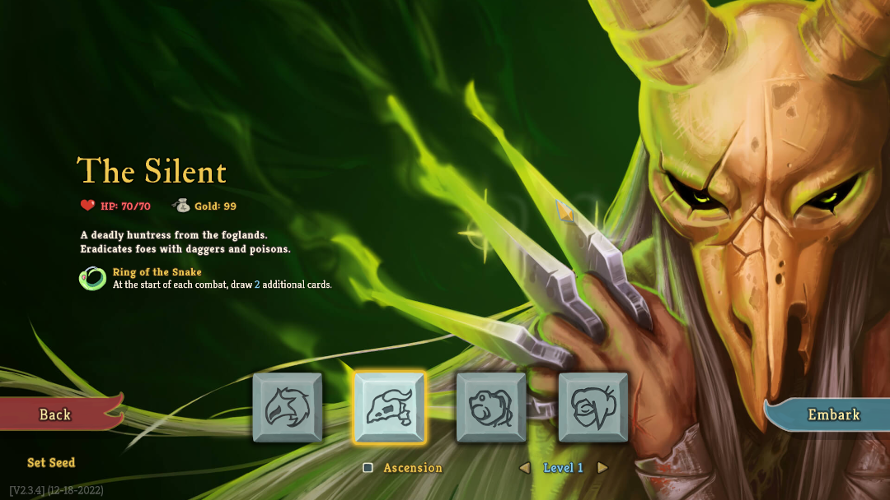

Slay The Spire
Ironclad
Silent
Defect
Watcher
Zbiór kart

Silent
- Druga postać w grze, nakłada duże ilości trucizny bądź też atakuje dziesiątkami sztyletów,
w trakcie bitwy może odrzucić karty aby aktywować niektóre efekty. Początkowy relikt pomaga dobrze rozpocząć walkę.